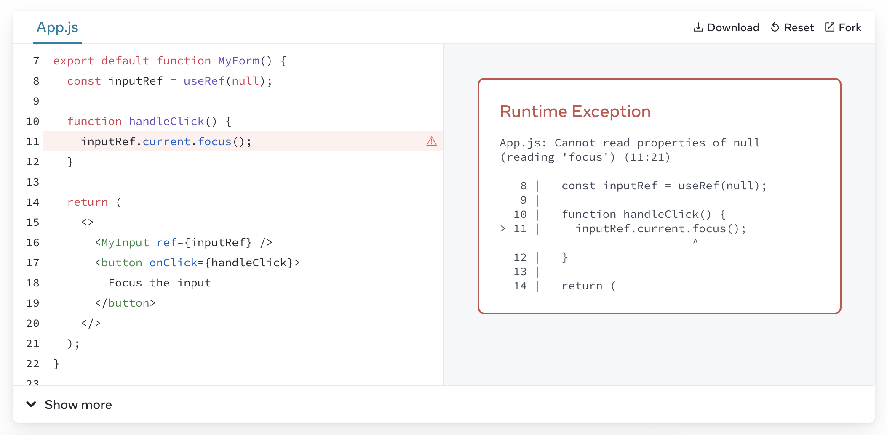
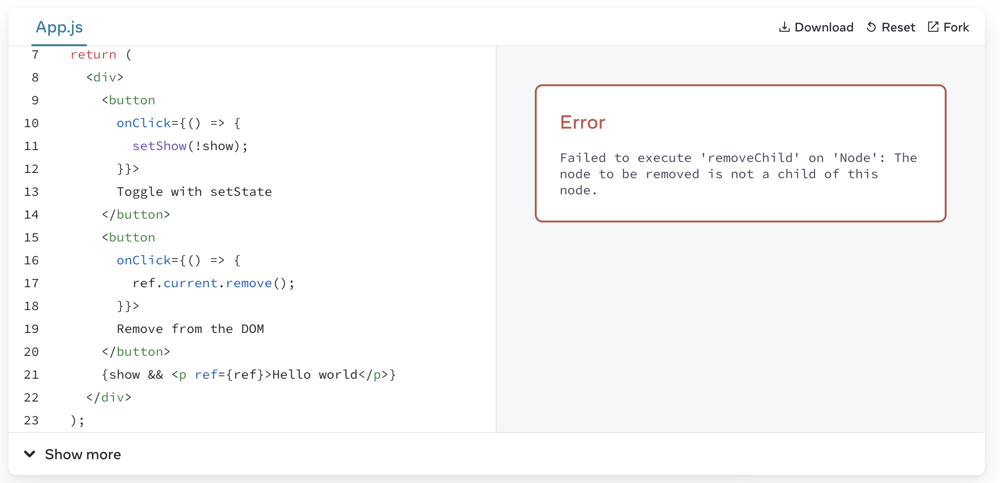

React Ref
文章目录
怎么用 ref callback 获取一个列表的 DOM 节点
当我们需要获取一个列表的 DOM 节点，但不知道列表长度时，像下面这样写 ref 显然是不行的：
|
|
因为违反了 Hooks 必须在组件顶部被调用 的规则，useRef 不能在条件语句和循环中被调用。map() 里自然也不可以。
一种方法是获取到父节点，然后使用操作 DOM 的方法例如 querySelectorAll 来获取到列表节点，但这样很不稳定，因为会受到子节点个数或 DOM 结构变化的影响。
另一种解决方案就是给 ref 传递一个函数，即 ref callback。
|
|
这样 ref 中存储的是一个 <Id, Node> 的 Map 映射。就可以通过 id 的 Map 映射来获取到相应节点~
获取另一个组件的 DOM 节点
当我们为一个原生节点设置 ref 时，React 会将节点挂在 current 属性上。但是当我们想在封装好的组件中使用 ref，就会遇到这样的报错：

这是因为 React 不允许组件获取另一个组件的 DOM，因为这样的做法会让我们的代码更难以预测与维护。
但是 React 也提供了相应的 forwardRef 允许我们获取到 DOM：
|
|
上面的 ref 转发会暴露整个 DOM 节点出去，这样外层就可以修改 DOM，例如它的样式。为了防止非预期的 DOM 操作，React 还提供了一个 useImperativeHandle Hook，用于暴露特定的 ref 操作方法，如下：
|
|
尽管 realInputRef 挂载了内部 DOM 元素，但是暴露出去的 ref 通过 useImperativeHandle 限制了操作 DOM 的方法，有效的增加了外部代码的可预期性。
为什么要限制操作 DOM
如果只是页面滚动或 focus，其实并不会有任何问题，但是文档中提供了一个例子，当同时使用 React state 和移除 DOM 的原生 API 时，就会产生如下的报错：

将原生的 DOM 操作和 React 控制的部分分开，也可以避免这样的问题~~但是自然是推荐限制 ref 使用来规范我们的代码。
官网最后还有一个 使用 flushSync 同步更新 state 的例子，也是在表达 React state 和 DOM 操作存在的不符合预期的地方，值得注意一下。
参考资料
文章作者 xuyou
上次更新 2022-08-07